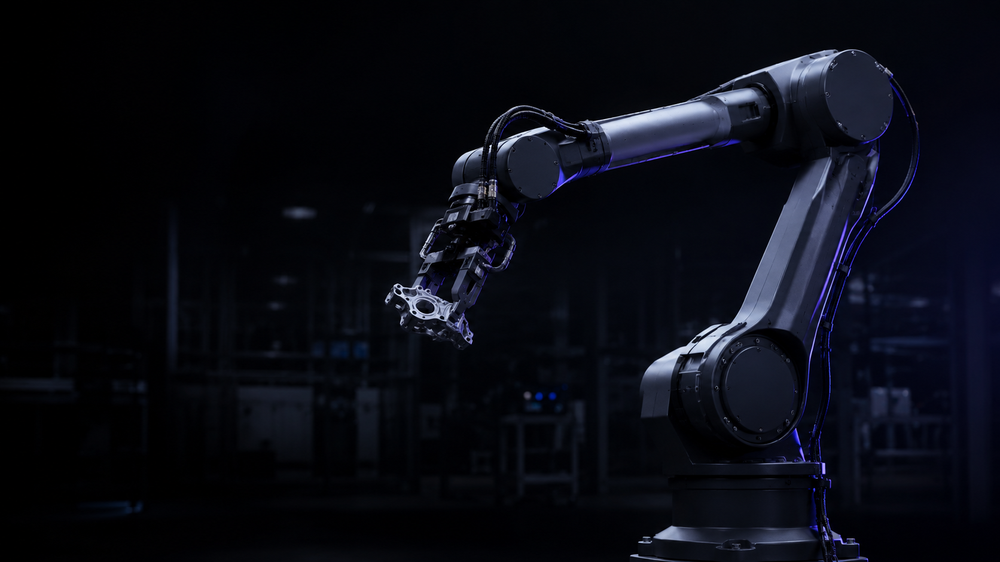

FOUNDATION MODEL
로봇 파운데이션 모델
수천 시간의 조작 데이터로 학습한 범용 제어 모델. 새로운 작업을 소량의 시연만으로 습득합니다.
PHYSICAL INTELLIGENCE FOR THE REAL WORLD
애드센은 로봇이 스스로 보고, 판단하고, 움직이도록 하는 피지컬 AI를 연구 개발합니다. 파운데이션 모델과 실제 하드웨어를 함께 설계하여 제조, 물류, 인프라 현장의 노동을 자동화합니다.
회사 소개 보기
01 — ABOUT
Vision & Mission
사람이 하기 어려운 일을 기계가 안전하게 해내는 사회를 만듭니다.
모든 기계가 물리 세계를 이해하는 시대. 애드센은 인식과 제어를 하나의 모델로 통합하여, 정해진 동작을 반복하는 자동화가 아닌 상황을 이해하고 판단하는 자율성을 만듭니다.
연구를 현장으로. 논문에 머무르는 기술이 아니라 24시간 가동되는 산업 현장에서 검증된 피지컬 AI를 공급하는 것이 우리의 역할입니다.
02 — BUSINESS
FOUNDATION MODEL
수천 시간의 조작 데이터로 학습한 범용 제어 모델. 새로운 작업을 소량의 시연만으로 습득합니다.
MANIPULATION
비정형 물체를 인식하고 파지·조립·검사까지 수행하는 로봇 팔 솔루션입니다.
SENSING
카메라·라이다·촉각 센서를 통합해 조명과 오염에 강인한 3D 인식을 제공합니다.
DEPLOYMENT
기존 설비와 MES에 연동되는 통합 설계부터 원격 모니터링, 모델 재학습까지 지원합니다.


04 — NEWSROOM
05 — CONTACT